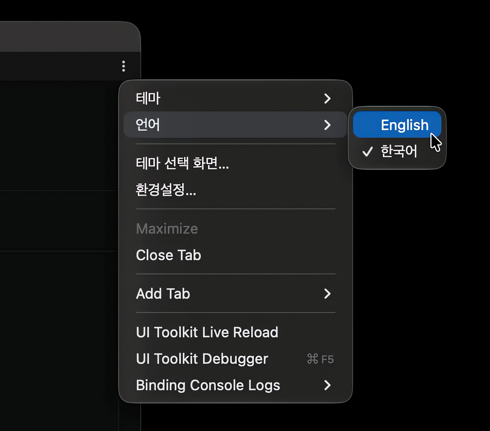

Settings
All settings are saved per user (EditorPrefs), not per project. Each team member can use different settings without affecting the project.
Theme and language
The first time you open the window, a theme selection screen appears. Choose Android Studio or Unity and click Continue. Dark / Light follows the Unity Editor skin.

You can change these anytime from the ⋮ menu at the top right of the window.

| Menu | Description |
|---|---|
| Theme | Android Studio / Unity |
| Language | English / 한국어 |
| Theme Setup… | Opens the theme selection screen again. |
| Preferences… | Opens Preferences > Android Wireless. |
Preferences
Change the following in Edit > Preferences > Android Wireless (macOS: Unity > Settings > Android Wireless).

| Setting | Description |
|---|---|
| Theme | Window theme |
| Language | Window language |
| adb Path Override | Used only to start the adb server when it isn't running. Leave empty to pick the newest installed adb automatically. |
| Show Theme Setup Next Time | Click this button to show the theme selection screen the next time you open the window. |
Update Platform-Tools
If Platform-Tools in Unity's Android SDK is below 37, an update notice appears above the device list.
- Click Install.
- Review the Android SDK License Agreement notice and click Agree and Install.
- The latest Platform-Tools is installed with the
sdkmanagerincluded in Unity's SDK.
Click Later to skip for now.